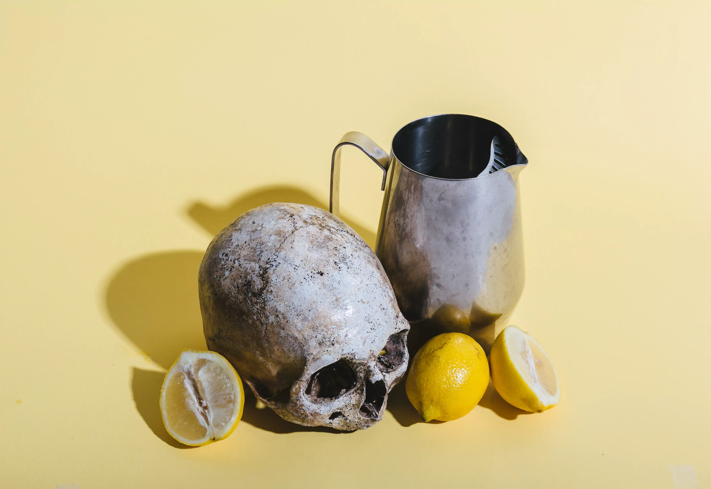
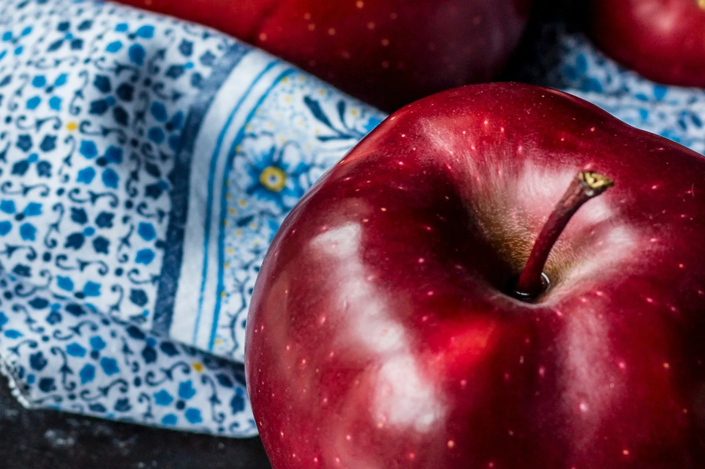
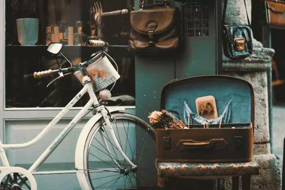
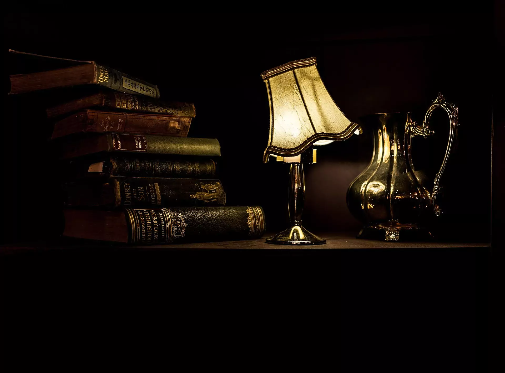
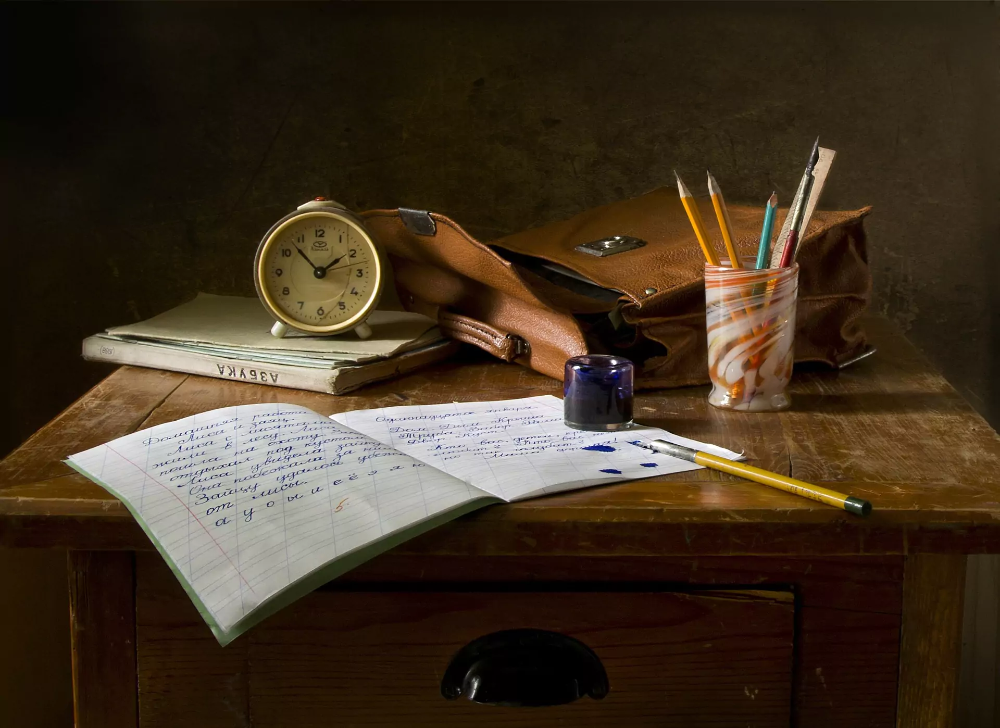
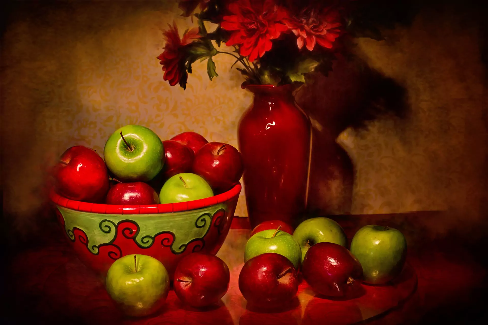

Grove St. Gallery - Beauty in the Still
A collection of drawings and photographs of still life. Capturing the beauty in everyday objects, the elegance in their form and the scenes they create that one might often miss if not paying attention.





